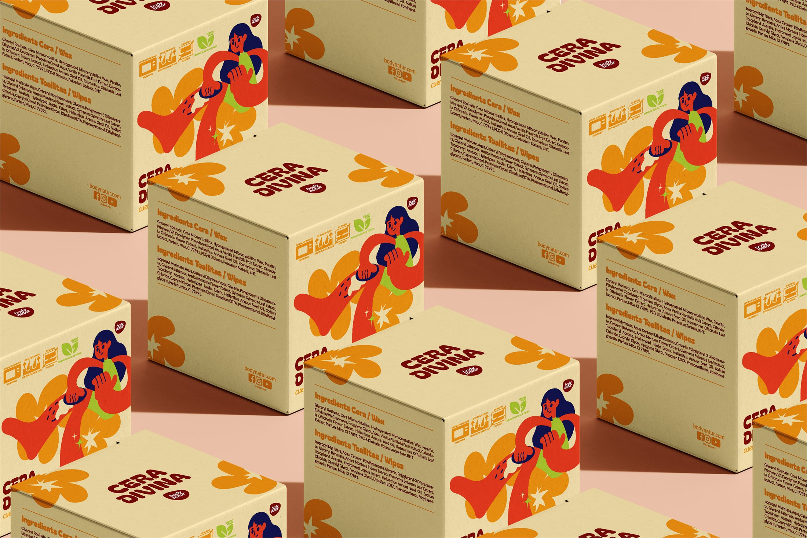
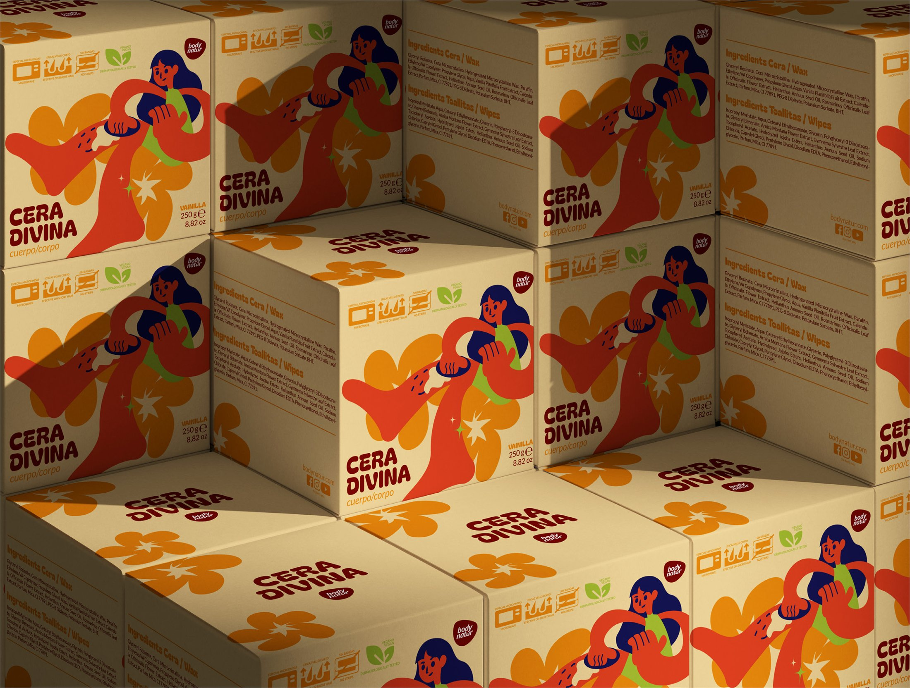
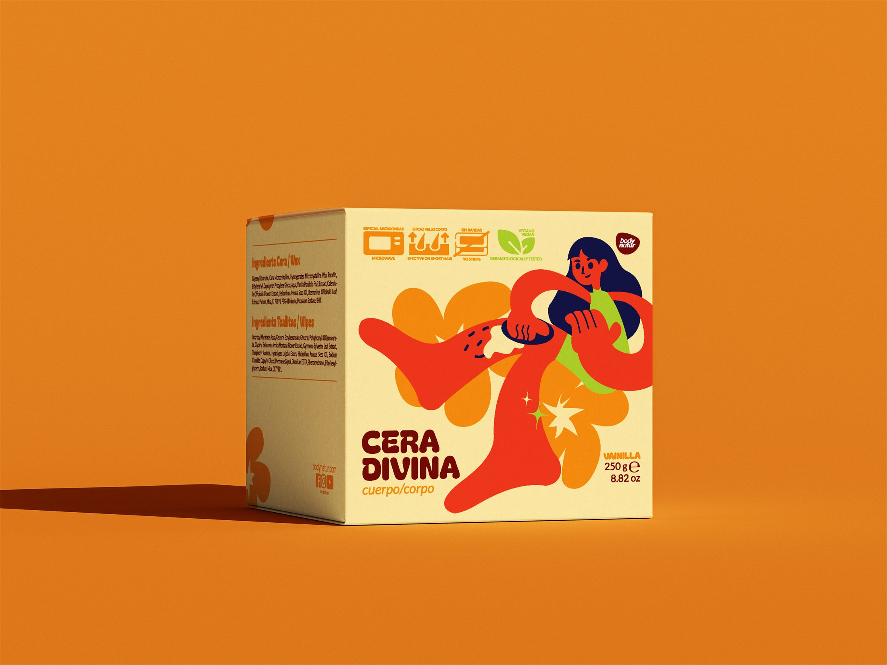
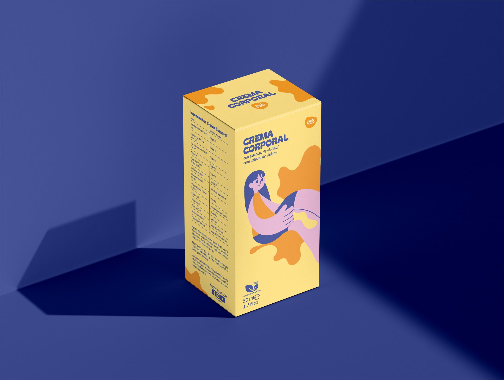
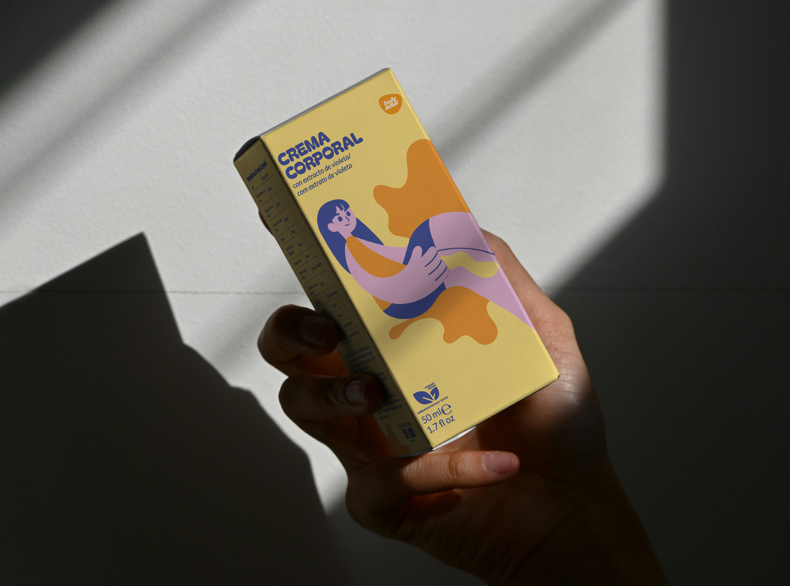
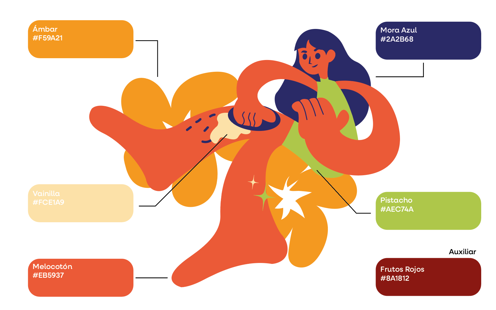
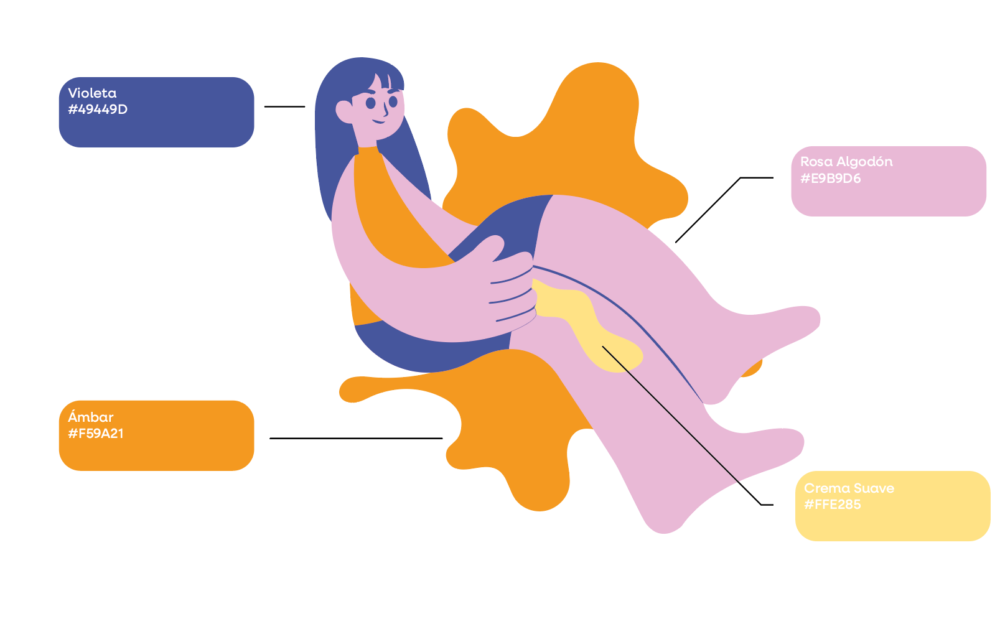
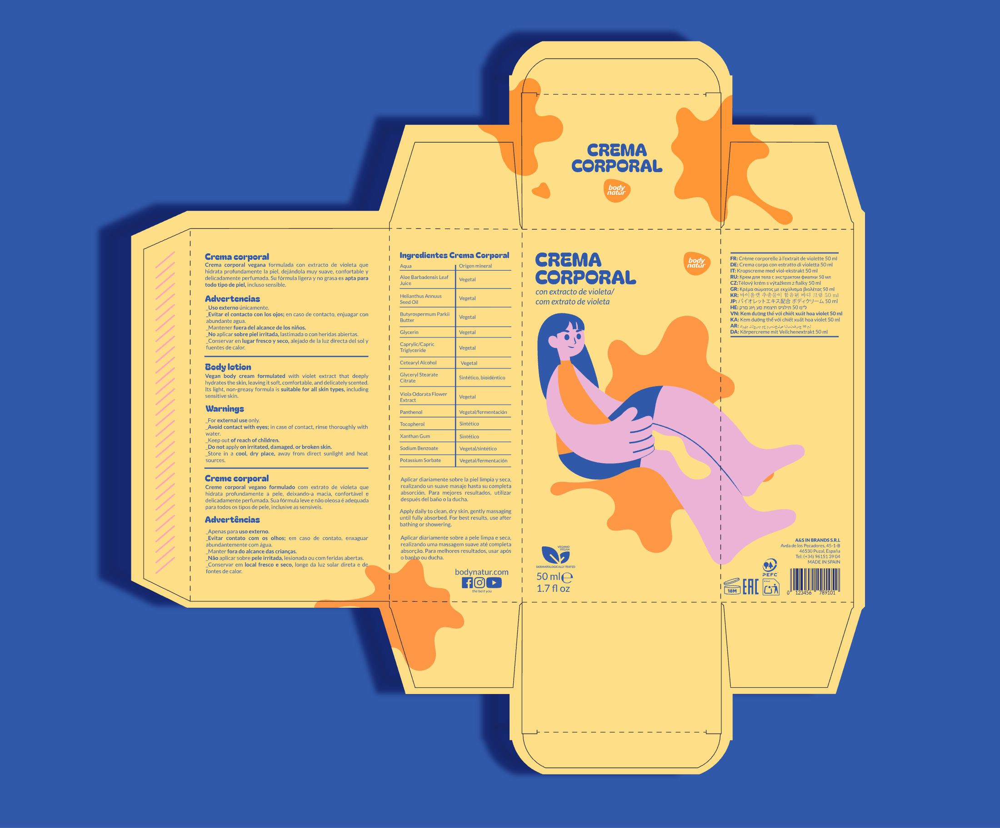
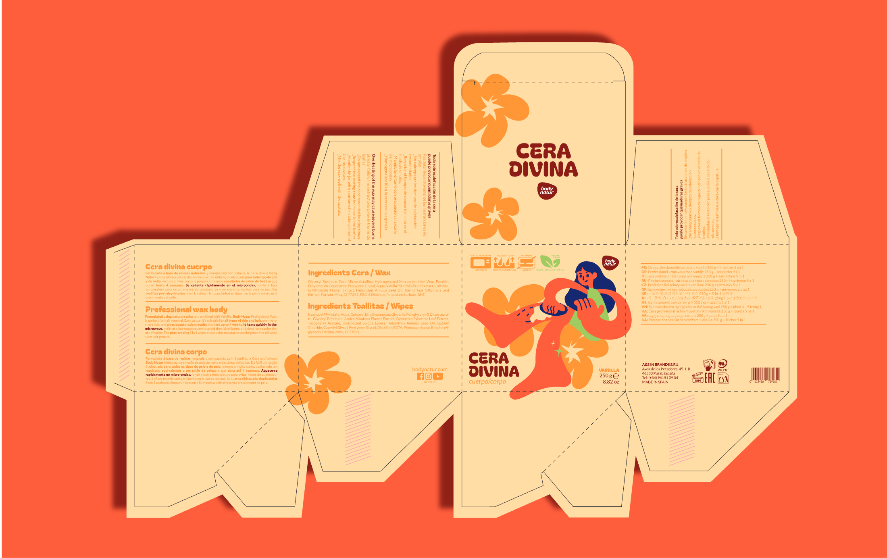

Rediseño de packaging

- Rediseño de packaging
- Cliente
- Proyecto académico
- Año
- 2026

Rediseño de packaging para mejorar la comunicación visual del producto y orientar su imagen hacia un público más joven, mediante un sistema de ilustraciones flat design, personajes con proporciones deformadas y una paleta cromática diferenciada y llamativa.


Desarrollo de un packaging secundario a partir del nuevo lenguaje visual, manteniendo la identidad gráfica y su sistema.





Planimetrías con marcas de corte, plegado y pegado